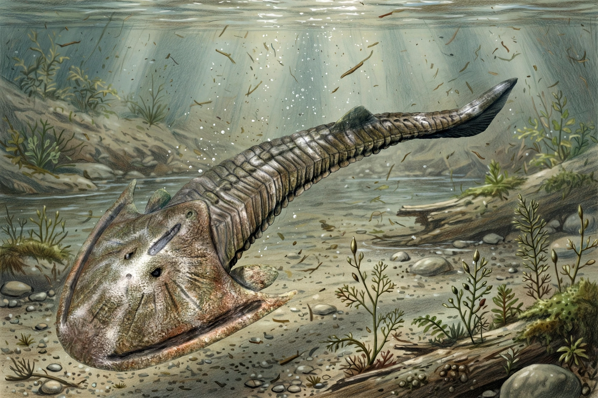

Cephalaspis ('head shield') is an extinct genus of jawless fish (ostracoderm) of the class Osteostraci, living in the early Devonian period, about 415–398 million years ago, in freshwater environments of Europe and North America.

| Kingdom | Animalia |
|---|---|
| Class | Osteostraci |
| Genus | Cephalaspis Agassiz, 1835 |
Cephalaspis was a small, trout-sized bottom feeder, roughly 15–20 cm long, with a heavily armoured horseshoe-shaped head shield, a scaly flexible tail with an upturned lobe, and paired pectoral flaps. It had no jaws or paired fins in the modern sense and likely sifted invertebrates and detritus from river bottoms. Sensory fields on the head shield may have detected predators or electric fields.
Fossils are known especially from the Old Red Sandstone of Britain, Spitsbergen and Canada. The genus was described by Louis Agassiz and became a classic example of early vertebrate evolution.